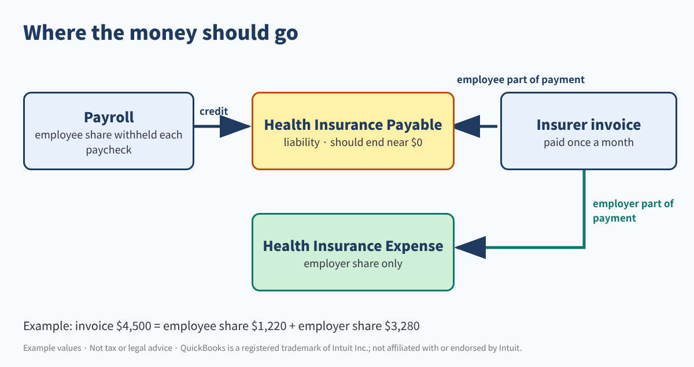
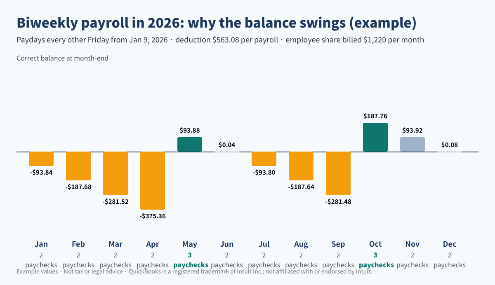

You withhold part of each employee's health insurance premium in payroll. Once a month you pay the insurer's invoice. In theory the liability account for those deductions should hover near zero. In practice, many small business owners open the Balance Sheet in December and find Health Insurance Payable (or "Payroll Liabilities: Health Insurance") sitting at thousands of dollars, or negative, with no idea which month went wrong.
This question comes up again and again in QuickBooks user forums, for QuickBooks Desktop and QuickBooks Online alike, and the usual replies only say "it depends on how you recorded the payment." This guide gives you a method you can follow yourself: a month-by-month tie-out you can build in Excel or Google Sheets, a way to tell normal timing from real errors, and one correcting entry. It matters now because year-end is when payroll reports, W-2s and your tax preparer will all look at these balances.
This article is general bookkeeping information, not tax, legal or payroll advice; confirm your own situation with a licensed professional.
Two things touch the liability. Each payroll credits it with the employee deductions. Each payment to the insurer should debit it, but only for the employee part of the invoice. The employer part of the invoice is your health insurance expense.

When the account does not clear, it is usually because of one of these:
Put one row per month in a spreadsheet. Row 1 holds headers and the data starts in row 2. Use these columns:
| Column | What goes in it | Formula (row 2) |
|---|---|---|
| A Month | Jan, Feb … | typed |
| B Invoice total | from the insurer invoice | typed |
| C Employee share | employee part of that invoice | typed |
| D Deductions | withheld in payroll that month | typed |
| E Paid | paid for that invoice | typed |
| F Employee share paid | employee part of the payment | =IF(B2=0,0,ROUND(C2*E2/B2,2)) |
| G Correct balance | running liability | =N(G1)+D2-F2 (copy down) |
Table 1. The month table. In row 2, N(G1) treats the header as zero; if you know the correct balance on January 1, add it there.
The last value in column G is the correct balance on your tie-out date. The amount to fix is the QuickBooks balance minus the correct balance. Here is a worked example for a company with four covered employees, biweekly payroll starting January 9, 2026, and a $4,500 monthly invoice of which $1,220 is the employee share:
| Month (example) | Employee share billed | Deductions | Share paid | Correct balance |
|---|---|---|---|---|
| Jan (2 paychecks) | $1,220.00 | $1,126.16 | $1,220.00 | -$93.84 |
| Apr (2 paychecks) | $1,220.00 | $1,126.16 | $1,220.00 | -$375.36 |
| May (3 paychecks) | $1,220.00 | $1,689.24 | $1,220.00 | $93.88 |
| Oct (3 paychecks) | $1,220.00 | $1,689.24 | $1,220.00 | $187.76 |
| Jan–Oct total | $12,200.00 | $12,387.76 | $12,200.00 | $187.76 |
Table 2. Selected months from the example (example values). Deduction per payroll = each employee's monthly share × 12 ÷ 26, rounded to cents: $60.00 + $180.00 + $263.08 + $60.00 = $563.08.
In this example QuickBooks showed $12,387.76 on October 31 because every insurer payment went fully to expense. The correct balance is $187.76, so $12,200.00 has to come out of the liability.
Not every balance is a mistake. Add two quick checks to your sheet:
=SUM(D:D)-SUM(C:C)). With biweekly payroll this swings with 3-paycheck months and should come back close to zero by year-end. A gap that keeps growing, or that matches one person's share, points to a missed or wrong deduction.=SUM(C:C)-SUM(F:F)). If you pay each invoice the following month, this is normal at month-end.To see your 3-paycheck months, list your paydays in a column (for example, column P) and count them per month with =COUNTIFS(P:P,">="&DATE(2026,5,1),P:P,"<="&EOMONTH(DATE(2026,5,1),0)). With paydays every other Friday from January 9, 2026, May and October each have three paydays and the year has 26.

If a calendar year happens to have an extra payday for your schedule, per-paycheck deductions set for the usual number of paydays will collect more than the annual employee share. Ask your payroll provider how they handle that year.
When QuickBooks shows more than the correct balance (the usual case), the entry generally is: debit Health Insurance Payable and credit Health Insurance Expense for the amount to fix. When QuickBooks shows less, reverse the two lines.
Date the entry in an open period. If part of the difference belongs to a year whose tax return is already filed, talk to your CPA before you post anything; do not change closed or filed periods just to make the numbers match.
Split each insurer payment the same way: employee share to the liability, employer share to expense. In the example, each $4,500 payment becomes $1,220 to Health Insurance Payable and $3,280 to Health Insurance Expense. A spreadsheet formula for the liability line is =ROUND(Paid*EmployeeShare/InvoiceTotal,2).
Not necessarily. With monthly payroll and invoices paid in the same month, it often is. With biweekly payroll or invoices paid the following month, a small balance at month-end can be normal timing.
It depends on your plan. IRS Publication 15-B (2026) explains that a cafeteria plan lets participants receive qualified benefits on a pre-tax basis, and that employers can generally exclude the value of accident or health benefits they provide from employees' wages, with an exception for 2% shareholder-employees of S corporations. Check your plan documents and payroll setup with your benefits or payroll provider. The tie-out method above is the same either way.
Then there are no deductions, the employee share is zero, the whole payment is expense, and the liability should stay at zero.
IRS Publication 15-B treats 2% shareholder-employees of S corporations differently for these benefits, so keep those premiums separate and confirm the handling with your CPA.
You can download the ready-made Health Insurance Premium Tie-Out 2026 for free in the Free kit download box below (Excel + PDF guide, no sign-up).
Disclaimer: This article is for general educational purposes only and is not tax, legal, payroll or accounting advice. It does not create a client relationship, and it does not promise any particular result. Rules, plan terms and software menus change; your situation may differ, so confirm your own case with a licensed professional before acting. All amounts are examples. QuickBooks is a registered trademark of Intuit Inc.; not affiliated with or endorsed by Intuit.